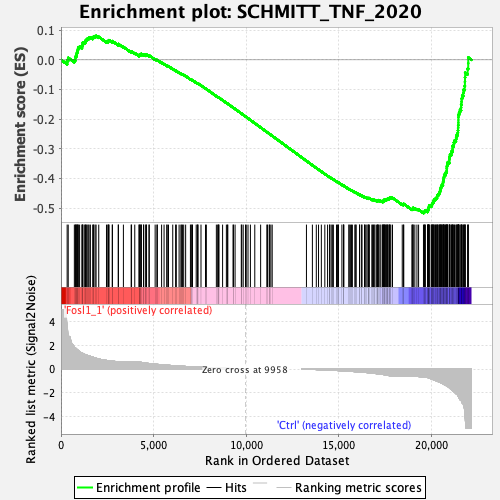
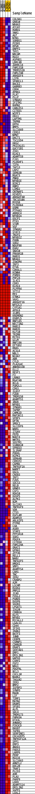
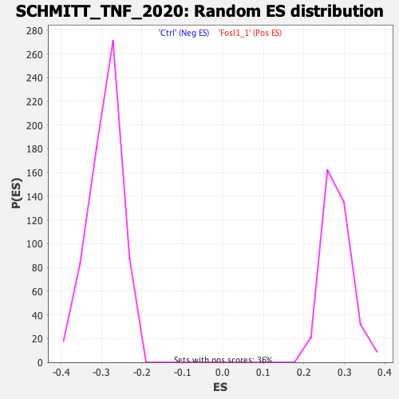

| | | Dataset | ranaseq_carol_ns_sel_exprs.ranaseq_carol_ns_sel_phenotype.cls
#Fosl1_1_versus_Ctrl |
| Phenotype | ranaseq_carol_ns_sel_phenotype.cls#Fosl1_1_versus_Ctrl |
| Upregulated in class | Ctrl |
| GeneSet | SCHMITT_TNF_2020 |
| Enrichment Score (ES) | -0.51724255 |
| Normalized Enrichment Score (NES) | -1.7726138 |
| Nominal p-value | 0.0 |
| FDR q-value | 8.502024E-5 |
| FWER p-Value | 0.001 |
Table: GSEA Results Summary

Fig 1: Enrichment plot: SCHMITT_TNF_2020
Profile of the Running ES Score & Positions of GeneSet Members on the Rank Ordered List
| SYMBOL | TITLE | RANK IN GENE LIST | RANK METRIC SCORE | RUNNING ES | CORE ENRICHMENT | | 1 | COL9A1 | COL9A1 | 332 | 3.493 | -0.0015 | No |
| 2 | GRB10 | GRB10 | 390 | 2.780 | 0.0069 | No |
| 3 | NR4A3 | NR4A3 | 721 | 1.858 | -0.0009 | No |
| 4 | ATCAY | ATCAY | 776 | 1.779 | 0.0036 | No |
| 5 | ROBO1 | ROBO1 | 777 | 1.778 | 0.0106 | No |
| 6 | VWA1 | VWA1 | 820 | 1.703 | 0.0153 | No |
| 7 | AGT | AGT | 850 | 1.666 | 0.0205 | No |
| 8 | NTN1 | NTN1 | 865 | 1.652 | 0.0264 | No |
| 9 | SORBS1 | SORBS1 | 901 | 1.611 | 0.0311 | No |
| 10 | PCDH1 | PCDH1 | 915 | 1.584 | 0.0367 | No |
| 11 | RPGR | RPGR | 932 | 1.561 | 0.0421 | No |
| 12 | ENPP2 | ENPP2 | 1004 | 1.473 | 0.0447 | No |
| 13 | THY1 | THY1 | 1133 | 1.343 | 0.0441 | No |
| 14 | NRCAM | NRCAM | 1147 | 1.335 | 0.0487 | No |
| 15 | RGS3 | RGS3 | 1172 | 1.319 | 0.0528 | No |
| 16 | ASPHD1 | ASPHD1 | 1174 | 1.318 | 0.0580 | No |
| 17 | LRRC4B | LRRC4B | 1258 | 1.249 | 0.0591 | No |
| 18 | ZDHHC14 | ZDHHC14 | 1315 | 1.210 | 0.0613 | No |
| 19 | FAM131B | FAM131B | 1325 | 1.204 | 0.0656 | No |
| 20 | TMEM151B | TMEM151B | 1369 | 1.172 | 0.0682 | No |
| 21 | FAM174B | FAM174B | 1413 | 1.150 | 0.0708 | No |
| 22 | ARHGEF4 | ARHGEF4 | 1471 | 1.126 | 0.0726 | No |
| 23 | LIFR | LIFR | 1518 | 1.098 | 0.0748 | No |
| 24 | SPARCL1 | SPARCL1 | 1588 | 1.068 | 0.0758 | No |
| 25 | BACE2 | BACE2 | 1714 | 0.998 | 0.0740 | No |
| 26 | GABRB3 | GABRB3 | 1749 | 0.981 | 0.0763 | No |
| 27 | CDH4 | CDH4 | 1768 | 0.972 | 0.0793 | No |
| 28 | APBA1 | APBA1 | 1841 | 0.939 | 0.0797 | No |
| 29 | PLAT | PLAT | 1895 | 0.913 | 0.0809 | No |
| 30 | PLLP | PLLP | 2039 | 0.845 | 0.0777 | No |
| 31 | SYNGR3 | SYNGR3 | 2457 | 0.723 | 0.0615 | No |
| 32 | IFITM1 | IFITM1 | 2541 | 0.703 | 0.0604 | No |
| 33 | RHPN2 | RHPN2 | 2542 | 0.703 | 0.0632 | No |
| 34 | CABLES1 | CABLES1 | 2565 | 0.702 | 0.0649 | No |
| 35 | CITED1 | CITED1 | 2597 | 0.692 | 0.0662 | No |
| 36 | WIPF3 | WIPF3 | 2769 | 0.656 | 0.0610 | No |
| 37 | EBI3 | EBI3 | 2779 | 0.654 | 0.0632 | No |
| 38 | LAPTM5 | LAPTM5 | 3093 | 0.631 | 0.0513 | No |
| 39 | TRPM8 | TRPM8 | 3102 | 0.631 | 0.0534 | No |
| 40 | DPP4 | DPP4 | 3371 | 0.602 | 0.0436 | No |
| 41 | BMP5 | BMP5 | 3790 | 0.602 | 0.0268 | No |
| 42 | SLC16A9 | SLC16A9 | 3811 | 0.602 | 0.0283 | No |
| 43 | CERS1 | CERS1 | 3985 | 0.602 | 0.0227 | No |
| 44 | NPNT | NPNT | 4219 | 0.589 | 0.0144 | No |
| 45 | DACT1 | DACT1 | 4223 | 0.589 | 0.0166 | No |
| 46 | TSC22D4 | TSC22D4 | 4252 | 0.581 | 0.0176 | No |
| 47 | HAS2 | HAS2 | 4313 | 0.563 | 0.0170 | No |
| 48 | PRICKLE1 | PRICKLE1 | 4314 | 0.563 | 0.0193 | No |
| 49 | GUCY1B1 | GUCY1B1 | 4343 | 0.556 | 0.0202 | No |
| 50 | ZIK1 | ZIK1 | 4458 | 0.526 | 0.0170 | No |
| 51 | KLHL5 | KLHL5 | 4470 | 0.523 | 0.0186 | No |
| 52 | ADAMTS9 | ADAMTS9 | 4583 | 0.495 | 0.0154 | No |
| 53 | FJX1 | FJX1 | 4586 | 0.494 | 0.0172 | No |
| 54 | PLEKHF1 | PLEKHF1 | 4621 | 0.485 | 0.0176 | No |
| 55 | TIFA | TIFA | 4754 | 0.461 | 0.0134 | No |
| 56 | TAF13 | TAF13 | 4767 | 0.459 | 0.0146 | No |
| 57 | LRP2 | LRP2 | 5086 | 0.408 | 0.0017 | No |
| 58 | SEMA3B | SEMA3B | 5180 | 0.394 | -0.0010 | No |
| 59 | MGAT3 | MGAT3 | 5208 | 0.389 | -0.0007 | No |
| 60 | PNKD | PNKD | 5435 | 0.359 | -0.0096 | No |
| 61 | NFKBIE | NFKBIE | 5568 | 0.339 | -0.0143 | No |
| 62 | BIRC2 | BIRC2 | 5712 | 0.319 | -0.0196 | No |
| 63 | RBM3 | RBM3 | 5737 | 0.317 | -0.0194 | No |
| 64 | LIMD2 | LIMD2 | 5808 | 0.310 | -0.0214 | No |
| 65 | CNTNAP1 | CNTNAP1 | 6037 | 0.282 | -0.0307 | No |
| 66 | HIVEP1 | HIVEP1 | 6192 | 0.264 | -0.0367 | No |
| 67 | ARHGEF40 | ARHGEF40 | 6229 | 0.261 | -0.0374 | No |
| 68 | TBC1D10A | TBC1D10A | 6380 | 0.244 | -0.0432 | No |
| 69 | MYO5B | MYO5B | 6477 | 0.237 | -0.0467 | No |
| 70 | PLEKHA4 | PLEKHA4 | 6519 | 0.233 | -0.0477 | No |
| 71 | OSMR | OSMR | 6568 | 0.229 | -0.0490 | No |
| 72 | PTP4A3 | PTP4A3 | 6629 | 0.222 | -0.0508 | No |
| 73 | ARRDC4 | ARRDC4 | 6734 | 0.212 | -0.0547 | No |
| 74 | NFKBIA | NFKBIA | 6992 | 0.191 | -0.0657 | No |
| 75 | OSCP1 | OSCP1 | 7036 | 0.186 | -0.0670 | No |
| 76 | PTX3 | PTX3 | 7074 | 0.183 | -0.0679 | No |
| 77 | STOM | STOM | 7104 | 0.181 | -0.0686 | No |
| 78 | VGF | VGF | 7304 | 0.163 | -0.0770 | No |
| 79 | IFNGR2 | IFNGR2 | 7369 | 0.158 | -0.0793 | No |
| 80 | STAT3 | STAT3 | 7386 | 0.157 | -0.0794 | No |
| 81 | TNIP2 | TNIP2 | 7402 | 0.155 | -0.0795 | No |
| 82 | NFKBIZ | NFKBIZ | 7563 | 0.143 | -0.0862 | No |
| 83 | PXDN | PXDN | 7807 | 0.131 | -0.0968 | No |
| 84 | SOD2 | SOD2 | 7853 | 0.129 | -0.0984 | No |
| 85 | NDUFB8 | NDUFB8 | 8393 | 0.093 | -0.1226 | No |
| 86 | EGR2 | EGR2 | 8467 | 0.089 | -0.1256 | No |
| 87 | SNX10 | SNX10 | 8494 | 0.087 | -0.1265 | No |
| 88 | PRKAR1B | PRKAR1B | 8512 | 0.086 | -0.1269 | No |
| 89 | RAB31 | RAB31 | 8535 | 0.084 | -0.1276 | No |
| 90 | NR4A1 | NR4A1 | 8730 | 0.071 | -0.1362 | No |
| 91 | ZSWIM4 | ZSWIM4 | 8934 | 0.057 | -0.1452 | No |
| 92 | IRF3 | IRF3 | 8991 | 0.053 | -0.1476 | No |
| 93 | ETV6 | ETV6 | 9013 | 0.052 | -0.1483 | No |
| 94 | CDKAL1 | CDKAL1 | 9296 | 0.032 | -0.1611 | No |
| 95 | KCNN4 | KCNN4 | 9316 | 0.031 | -0.1618 | No |
| 96 | PSMD5 | PSMD5 | 9404 | 0.026 | -0.1657 | No |
| 97 | PHF24 | PHF24 | 9740 | 0.009 | -0.1810 | No |
| 98 | IL4I1 | IL4I1 | 9764 | 0.009 | -0.1820 | No |
| 99 | CD83 | CD83 | 9843 | 0.007 | -0.1855 | No |
| 100 | KLHL6 | KLHL6 | 9968 | 0.000 | -0.1912 | No |
| 101 | PLPPR4 | PLPPR4 | 10007 | 0.000 | -0.1929 | No |
| 102 | SYT12 | SYT12 | 10103 | 0.000 | -0.1973 | No |
| 103 | MPZ | MPZ | 10233 | 0.000 | -0.2032 | No |
| 104 | ETNK2 | ETNK2 | 10469 | 0.000 | -0.2139 | No |
| 105 | VAX1 | VAX1 | 10785 | 0.000 | -0.2283 | No |
| 106 | ARHGEF16 | ARHGEF16 | 11121 | 0.000 | -0.2436 | No |
| 107 | NFE2L3 | NFE2L3 | 11154 | 0.000 | -0.2451 | No |
| 108 | CYP1A1 | CYP1A1 | 11246 | 0.000 | -0.2492 | No |
| 109 | APOL6 | APOL6 | 11271 | 0.000 | -0.2503 | No |
| 110 | ICAM1 | ICAM1 | 11338 | 0.000 | -0.2533 | No |
| 111 | KREMEN2 | KREMEN2 | 11410 | 0.000 | -0.2566 | No |
| 112 | OSBPL5 | OSBPL5 | 13260 | -0.007 | -0.3410 | No |
| 113 | RNF145 | RNF145 | 13581 | -0.030 | -0.3555 | No |
| 114 | NECTIN2 | NECTIN2 | 13793 | -0.046 | -0.3650 | No |
| 115 | RAB13 | RAB13 | 13913 | -0.054 | -0.3702 | No |
| 116 | RAB35 | RAB35 | 14065 | -0.065 | -0.3768 | No |
| 117 | KLF10 | KLF10 | 14253 | -0.079 | -0.3851 | No |
| 118 | TRIM8 | TRIM8 | 14402 | -0.088 | -0.3915 | No |
| 119 | MITD1 | MITD1 | 14514 | -0.096 | -0.3962 | No |
| 120 | GCLM | GCLM | 14515 | -0.096 | -0.3958 | No |
| 121 | RNF19A | RNF19A | 14596 | -0.104 | -0.3990 | No |
| 122 | EFTUD2 | EFTUD2 | 14660 | -0.109 | -0.4015 | No |
| 123 | RRAS | RRAS | 14715 | -0.113 | -0.4035 | No |
| 124 | ACSL6 | ACSL6 | 14885 | -0.125 | -0.4108 | No |
| 125 | NBL1 | NBL1 | 14933 | -0.127 | -0.4124 | No |
| 126 | NCOA7 | NCOA7 | 14975 | -0.131 | -0.4138 | No |
| 127 | ABR | ABR | 14989 | -0.132 | -0.4138 | No |
| 128 | CYLD | CYLD | 15176 | -0.147 | -0.4218 | No |
| 129 | PLA2G4C | PLA2G4C | 15261 | -0.155 | -0.4250 | No |
| 130 | ANKRD33B | ANKRD33B | 15263 | -0.155 | -0.4244 | No |
| 131 | ELL2 | ELL2 | 15283 | -0.157 | -0.4247 | No |
| 132 | RESF1 | RESF1 | 15549 | -0.184 | -0.4361 | No |
| 133 | F3 | F3 | 15573 | -0.188 | -0.4364 | No |
| 134 | LRRN3 | LRRN3 | 15647 | -0.195 | -0.4389 | No |
| 135 | MGAT4B | MGAT4B | 15692 | -0.198 | -0.4402 | No |
| 136 | BCL6 | BCL6 | 15742 | -0.205 | -0.4416 | No |
| 137 | PGM2L1 | PGM2L1 | 15874 | -0.220 | -0.4467 | No |
| 138 | CD63 | CD63 | 15920 | -0.226 | -0.4479 | No |
| 139 | IL6ST | IL6ST | 15946 | -0.228 | -0.4481 | No |
| 140 | FZD8 | FZD8 | 16129 | -0.247 | -0.4555 | No |
| 141 | TMEM158 | TMEM158 | 16135 | -0.248 | -0.4547 | No |
| 142 | ADAMTS1 | ADAMTS1 | 16243 | -0.261 | -0.4586 | No |
| 143 | INSR | INSR | 16258 | -0.262 | -0.4582 | No |
| 144 | NFKB1 | NFKB1 | 16397 | -0.281 | -0.4634 | No |
| 145 | IFNGR1 | IFNGR1 | 16406 | -0.282 | -0.4627 | No |
| 146 | TAPBP | TAPBP | 16464 | -0.291 | -0.4641 | No |
| 147 | CAMK2D | CAMK2D | 16528 | -0.301 | -0.4658 | No |
| 148 | MAP3K11 | MAP3K11 | 16590 | -0.311 | -0.4674 | No |
| 149 | SFRP1 | SFRP1 | 16619 | -0.316 | -0.4674 | No |
| 150 | OPTN | OPTN | 16624 | -0.316 | -0.4664 | No |
| 151 | SMOC2 | SMOC2 | 16658 | -0.322 | -0.4666 | No |
| 152 | SLC35F6 | SLC35F6 | 16794 | -0.347 | -0.4714 | No |
| 153 | WARS | WARS | 16824 | -0.352 | -0.4714 | No |
| 154 | ITGAV | ITGAV | 16885 | -0.361 | -0.4727 | No |
| 155 | PEPD | PEPD | 16916 | -0.366 | -0.4726 | No |
| 156 | NUDT4 | NUDT4 | 16962 | -0.374 | -0.4732 | No |
| 157 | WWTR1 | WWTR1 | 17052 | -0.391 | -0.4758 | No |
| 158 | SQSTM1 | SQSTM1 | 17102 | -0.401 | -0.4764 | No |
| 159 | S100A10 | S100A10 | 17113 | -0.401 | -0.4753 | No |
| 160 | SPRED3 | SPRED3 | 17123 | -0.403 | -0.4741 | No |
| 161 | IL1RAP | IL1RAP | 17145 | -0.407 | -0.4735 | No |
| 162 | PODXL | PODXL | 17226 | -0.422 | -0.4755 | No |
| 163 | RIPK1 | RIPK1 | 17281 | -0.435 | -0.4762 | No |
| 164 | SEMA4B | SEMA4B | 17380 | -0.457 | -0.4789 | No |
| 165 | CEMIP2 | CEMIP2 | 17382 | -0.458 | -0.4772 | No |
| 166 | CAPN5 | CAPN5 | 17397 | -0.461 | -0.4760 | No |
| 167 | TNFRSF1A | TNFRSF1A | 17424 | -0.466 | -0.4754 | No |
| 168 | NAMPT | NAMPT | 17463 | -0.475 | -0.4752 | No |
| 169 | UGCG | UGCG | 17465 | -0.477 | -0.4734 | No |
| 170 | CREB3 | CREB3 | 17466 | -0.477 | -0.4715 | No |
| 171 | IRF1 | IRF1 | 17525 | -0.496 | -0.4722 | No |
| 172 | FZD5 | FZD5 | 17563 | -0.505 | -0.4719 | No |
| 173 | SOCS3 | SOCS3 | 17575 | -0.509 | -0.4704 | No |
| 174 | RELB | RELB | 17618 | -0.519 | -0.4703 | No |
| 175 | GRWD1 | GRWD1 | 17648 | -0.531 | -0.4696 | No |
| 176 | CSF1 | CSF1 | 17655 | -0.533 | -0.4678 | No |
| 177 | RDH10 | RDH10 | 17719 | -0.554 | -0.4685 | No |
| 178 | DUSP5 | DUSP5 | 17740 | -0.564 | -0.4672 | No |
| 179 | ALPK1 | ALPK1 | 17754 | -0.568 | -0.4655 | No |
| 180 | B2M | B2M | 17776 | -0.577 | -0.4642 | No |
| 181 | SLC2A3 | SLC2A3 | 17819 | -0.591 | -0.4638 | No |
| 182 | TNFRSF9 | TNFRSF9 | 17909 | -0.599 | -0.4655 | No |
| 183 | VDR | VDR | 18436 | -0.602 | -0.4872 | No |
| 184 | CTSS | CTSS | 18507 | -0.602 | -0.4880 | No |
| 185 | EGFLAM | EGFLAM | 18516 | -0.602 | -0.4860 | No |
| 186 | ADAM19 | ADAM19 | 18957 | -0.604 | -0.5038 | No |
| 187 | ARL6IP5 | ARL6IP5 | 19004 | -0.619 | -0.5034 | No |
| 188 | PTPRE | PTPRE | 19012 | -0.621 | -0.5013 | No |
| 189 | C4A | C4A | 19023 | -0.624 | -0.4993 | No |
| 190 | ASB9 | ASB9 | 19116 | -0.630 | -0.5011 | No |
| 191 | STAP2 | STAP2 | 19230 | -0.632 | -0.5037 | No |
| 192 | PPP1R18 | PPP1R18 | 19319 | -0.632 | -0.5053 | No |
| 193 | SGK1 | SGK1 | 19582 | -0.680 | -0.5146 | Yes |
| 194 | PDGFA | PDGFA | 19619 | -0.685 | -0.5135 | Yes |
| 195 | CITED4 | CITED4 | 19636 | -0.688 | -0.5116 | Yes |
| 196 | FAM129A | FAM129A | 19666 | -0.692 | -0.5102 | Yes |
| 197 | ORAI1 | ORAI1 | 19681 | -0.697 | -0.5081 | Yes |
| 198 | GFRA1 | GFRA1 | 19801 | -0.714 | -0.5107 | Yes |
| 199 | ZFP36 | ZFP36 | 19806 | -0.715 | -0.5081 | Yes |
| 200 | RELL1 | RELL1 | 19837 | -0.732 | -0.5066 | Yes |
| 201 | NAB2 | NAB2 | 19840 | -0.733 | -0.5038 | Yes |
| 202 | TNFAIP3 | TNFAIP3 | 19849 | -0.737 | -0.5013 | Yes |
| 203 | HMOX1 | HMOX1 | 19857 | -0.741 | -0.4987 | Yes |
| 204 | VMP1 | VMP1 | 19880 | -0.754 | -0.4967 | Yes |
| 205 | ADAMTS4 | ADAMTS4 | 19883 | -0.756 | -0.4938 | Yes |
| 206 | CARS | CARS | 19892 | -0.762 | -0.4912 | Yes |
| 207 | TNC | TNC | 19997 | -0.820 | -0.4927 | Yes |
| 208 | IER2 | IER2 | 20032 | -0.844 | -0.4910 | Yes |
| 209 | CRABP2 | CRABP2 | 20038 | -0.850 | -0.4879 | Yes |
| 210 | A2M | A2M | 20053 | -0.858 | -0.4851 | Yes |
| 211 | L1CAM | L1CAM | 20076 | -0.874 | -0.4827 | Yes |
| 212 | RIOX2 | RIOX2 | 20095 | -0.886 | -0.4801 | Yes |
| 213 | PMP22 | PMP22 | 20136 | -0.915 | -0.4783 | Yes |
| 214 | JCAD | JCAD | 20142 | -0.916 | -0.4749 | Yes |
| 215 | FOSL2 | FOSL2 | 20154 | -0.923 | -0.4718 | Yes |
| 216 | PGBD5 | PGBD5 | 20211 | -0.958 | -0.4706 | Yes |
| 217 | DUSP6 | DUSP6 | 20231 | -0.966 | -0.4677 | Yes |
| 218 | SH2B3 | SH2B3 | 20275 | -0.993 | -0.4657 | Yes |
| 219 | LPGAT1 | LPGAT1 | 20314 | -1.022 | -0.4635 | Yes |
| 220 | ISG20 | ISG20 | 20319 | -1.025 | -0.4596 | Yes |
| 221 | CDKN1A | CDKN1A | 20334 | -1.035 | -0.4562 | Yes |
| 222 | KLF5 | KLF5 | 20369 | -1.057 | -0.4536 | Yes |
| 223 | NFKB2 | NFKB2 | 20422 | -1.090 | -0.4517 | Yes |
| 224 | MICALL2 | MICALL2 | 20439 | -1.100 | -0.4481 | Yes |
| 225 | LGALS1 | LGALS1 | 20466 | -1.122 | -0.4449 | Yes |
| 226 | CD44 | CD44 | 20484 | -1.138 | -0.4412 | Yes |
| 227 | IFIH1 | IFIH1 | 20489 | -1.142 | -0.4369 | Yes |
| 228 | IRAK2 | IRAK2 | 20518 | -1.156 | -0.4336 | Yes |
| 229 | BATF3 | BATF3 | 20525 | -1.162 | -0.4294 | Yes |
| 230 | JUNB | JUNB | 20559 | -1.193 | -0.4262 | Yes |
| 231 | CEBPB | CEBPB | 20573 | -1.206 | -0.4220 | Yes |
| 232 | CSRNP1 | CSRNP1 | 20633 | -1.244 | -0.4199 | Yes |
| 233 | CDKN2B | CDKN2B | 20635 | -1.246 | -0.4150 | Yes |
| 234 | ERAP1 | ERAP1 | 20645 | -1.256 | -0.4105 | Yes |
| 235 | SERTAD1 | SERTAD1 | 20654 | -1.268 | -0.4059 | Yes |
| 236 | EMP1 | EMP1 | 20675 | -1.290 | -0.4017 | Yes |
| 237 | EMILIN1 | EMILIN1 | 20686 | -1.301 | -0.3971 | Yes |
| 238 | GAP43 | GAP43 | 20696 | -1.306 | -0.3924 | Yes |
| 239 | CSRP2 | CSRP2 | 20706 | -1.319 | -0.3876 | Yes |
| 240 | FGF2 | FGF2 | 20771 | -1.362 | -0.3852 | Yes |
| 241 | NRG1 | NRG1 | 20780 | -1.369 | -0.3802 | Yes |
| 242 | PDGFRL | PDGFRL | 20822 | -1.421 | -0.3765 | Yes |
| 243 | BCL3 | BCL3 | 20841 | -1.433 | -0.3717 | Yes |
| 244 | CXCL10 | CXCL10 | 20842 | -1.433 | -0.3660 | Yes |
| 245 | NUAK2 | NUAK2 | 20847 | -1.435 | -0.3606 | Yes |
| 246 | TAGLN2 | TAGLN2 | 20860 | -1.446 | -0.3554 | Yes |
| 247 | IER3 | IER3 | 20879 | -1.462 | -0.3505 | Yes |
| 248 | BMP2 | BMP2 | 20892 | -1.469 | -0.3453 | Yes |
| 249 | IGFBP3 | IGFBP3 | 20978 | -1.584 | -0.3430 | Yes |
| 250 | SYNPO | SYNPO | 20979 | -1.585 | -0.3368 | Yes |
| 251 | MAOB | MAOB | 20984 | -1.598 | -0.3307 | Yes |
| 252 | LIF | LIF | 21001 | -1.620 | -0.3250 | Yes |
| 253 | TIMP1 | TIMP1 | 21019 | -1.640 | -0.3194 | Yes |
| 254 | MATN2 | MATN2 | 21088 | -1.736 | -0.3157 | Yes |
| 255 | DRAM1 | DRAM1 | 21092 | -1.743 | -0.3090 | Yes |
| 256 | SPSB1 | SPSB1 | 21149 | -1.811 | -0.3044 | Yes |
| 257 | ALPL | ALPL | 21154 | -1.823 | -0.2974 | Yes |
| 258 | SDC4 | SDC4 | 21156 | -1.825 | -0.2903 | Yes |
| 259 | TMEM173 | TMEM173 | 21215 | -1.892 | -0.2855 | Yes |
| 260 | FAM43A | FAM43A | 21225 | -1.908 | -0.2785 | Yes |
| 261 | DTX3L | DTX3L | 21258 | -1.965 | -0.2722 | Yes |
| 262 | AHNAK2 | AHNAK2 | 21336 | -2.071 | -0.2676 | Yes |
| 263 | PIK3CD | PIK3CD | 21350 | -2.088 | -0.2600 | Yes |
| 264 | RASEF | RASEF | 21382 | -2.148 | -0.2530 | Yes |
| 265 | TGFB1 | TGFB1 | 21432 | -2.224 | -0.2465 | Yes |
| 266 | SERPINE1 | SERPINE1 | 21444 | -2.262 | -0.2381 | Yes |
| 267 | CDC42EP5 | CDC42EP5 | 21454 | -2.290 | -0.2295 | Yes |
| 268 | TNFRSF12A | TNFRSF12A | 21458 | -2.302 | -0.2206 | Yes |
| 269 | SPP1 | SPP1 | 21467 | -2.320 | -0.2119 | Yes |
| 270 | EMP3 | EMP3 | 21469 | -2.325 | -0.2028 | Yes |
| 271 | ANXA1 | ANXA1 | 21470 | -2.327 | -0.1937 | Yes |
| 272 | FADS3 | FADS3 | 21473 | -2.332 | -0.1846 | Yes |
| 273 | LARP6 | LARP6 | 21510 | -2.448 | -0.1766 | Yes |
| 274 | PERP | PERP | 21556 | -2.592 | -0.1685 | Yes |
| 275 | RGS16 | RGS16 | 21614 | -2.607 | -0.1609 | Yes |
| 276 | SLC16A3 | SLC16A3 | 21618 | -2.631 | -0.1507 | Yes |
| 277 | ARNTL2 | ARNTL2 | 21640 | -2.721 | -0.1410 | Yes |
| 278 | DOC2B | DOC2B | 21645 | -2.752 | -0.1303 | Yes |
| 279 | TRAF1 | TRAF1 | 21676 | -2.868 | -0.1205 | Yes |
| 280 | PLCD3 | PLCD3 | 21731 | -2.965 | -0.1113 | Yes |
| 281 | AHR | AHR | 21751 | -3.049 | -0.1002 | Yes |
| 282 | PLAU | PLAU | 21807 | -3.644 | -0.0884 | Yes |
| 283 | PARP9 | PARP9 | 21822 | -3.803 | -0.0741 | Yes |
| 284 | LHX9 | LHX9 | 21826 | -3.827 | -0.0592 | Yes |
| 285 | ADAMTS14 | ADAMTS14 | 21835 | -4.110 | -0.0434 | Yes |
| 286 | EMILIN2 | EMILIN2 | 21967 | -5.000 | -0.0298 | Yes |
| 287 | SGPP2 | SGPP2 | 22000 | -5.000 | -0.0116 | Yes |
| 288 | LOXL2 | LOXL2 | 22003 | -5.000 | 0.0079 | Yes |
Table: GSEA details [plain text format]

Fig 2: SCHMITT_TNF_2020
Blue-Pink O' Gram in the Space of the Analyzed GeneSet

Fig 3: SCHMITT_TNF_2020: Random ES distribution
Gene set null distribution of ES for SCHMITT_TNF_2020